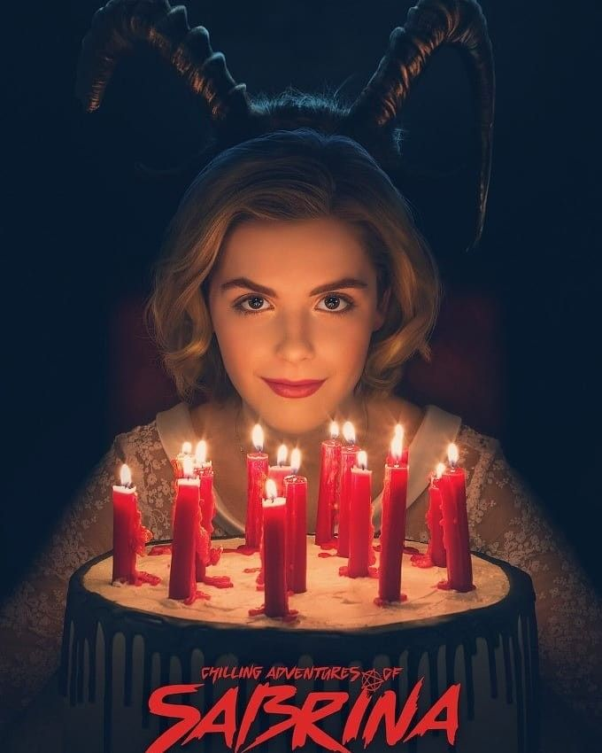
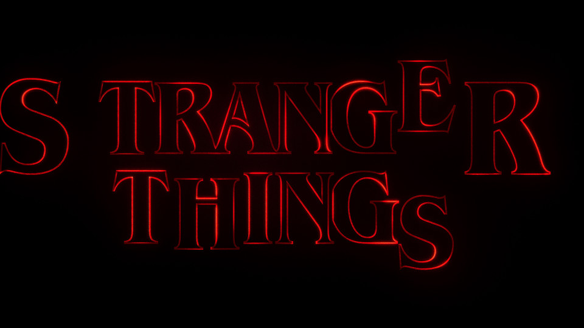
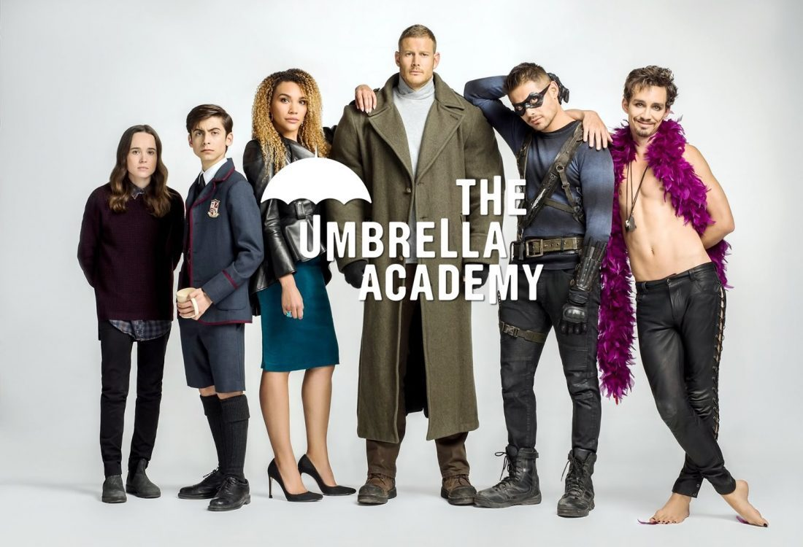

The Crown
A série da Rainha. A série se trata sobre o reinado da Rainha Elizabeth II, passando alguns acontecimentos da época na vida da Rainha e sua família.
{kind=link}
O Mundo Sombrio de Sabrina
Sabrina uma jovem metade bruxa e metade humana, só queria viver uma vida normal. Mas, desde o seu nascimento, ela têm deveres a cumprir com a escuridão e não consegue fugir disso.

{kind=link}
Stranger Things
Em Hawkins, Indiana, Will Byers, de 12 anos, desaparece misteriosamente. A mãe de Will, Joyce, torna-se frenética e tenta encontrar o filho, então o chefe de polícia, Jim Hopper começa a investigar, assim como os amigos de Will: Mike, Dustin e Lucas.
{kind=link}
The Umbrella Academy
Com a morte do pai, irmãos com poderes extraordinários se reencontram e descobrem surpreendentes segredos de família, além de uma ameaça iminente à humanidade.
{kind=link}
Dash & Lily
Momento fofinho agora, baseado em livros, a série retra um romance de Natal. Tudo começa quando o cínico Dash e a otimista Lily trocam desafios, sonhos e desejos em um caderno que enviam um ao outro por diferentes lugares de Nova Iorque, e descobrem que têm mais coisas em comum do que imaginavam.

Emily em Paris
Emily, uma jovem executiva de marketing que se muda de Chicago para Paris, após receber uma proposta de trabalho inesperada. Emily vai precisar achar o equilíbrio entre sua vida profissional e pessoal para aproveitar ao máximo seu tempo na Cidade Luz.